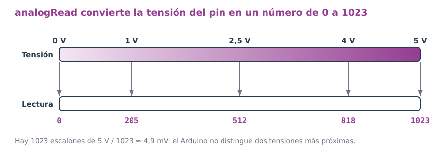
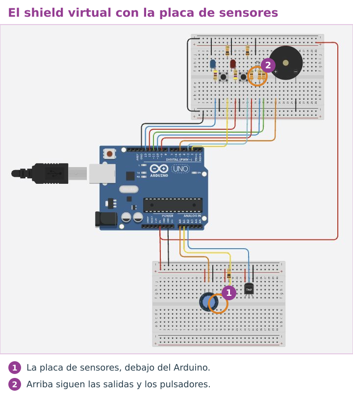
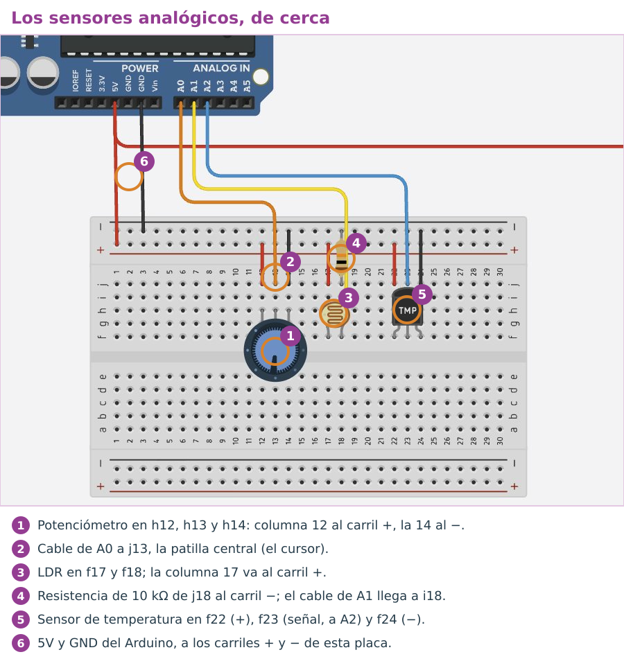
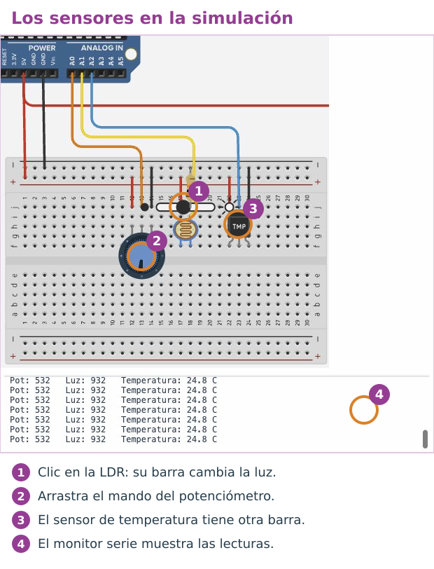
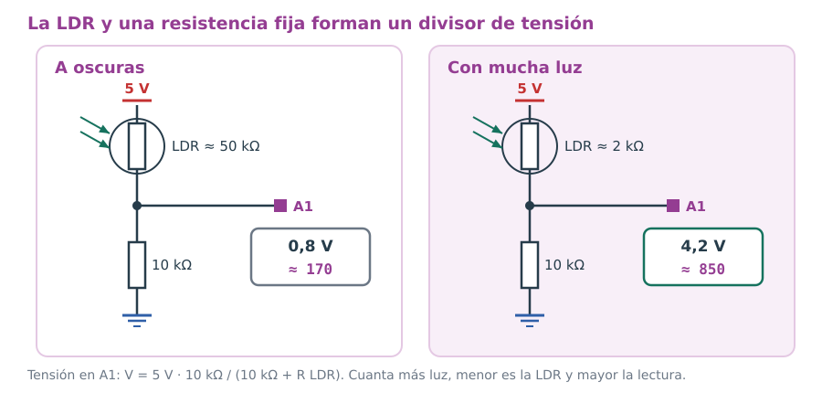

Qué vas a conseguir en esta página
Leer tensiones con analogRead, ver los números en el monitor serie y usar los tres sensores analógicos del shield: el potenciómetro, la LDR (luz) y el sensor de temperatura. Al final, cada lectura se convertirá en algo útil: un brillo, una farola automática y un termómetro de colores.
Leer una tensión: analogRead
Una entrada digital solo distingue «poca tensión» de «mucha». Pero muchos sensores dan una tensión que cambia poco a poco con lo que miden: más luz, más temperatura, más giro. Para leerla, el Arduino tiene seis entradas analógicas, de A0 a A5, y un conversor analógico-digital que convierte la tensión de 0 a 5 V en un número entero de 0 a 1023.

Se lee con analogRead(pin), por ejemplo int luz = analogRead(A1);. Las entradas analógicas no necesitan pinMode. Si quieres saber la tensión que corresponde a una lectura, deshaz la escala:
\[V=\frac{\text{lectura}\cdot 5\ \text{V}}{1023}\]
Ahora tú: de lectura a tensión y al revés
No se entrega ni cuenta para la nota: sirve para comprobar si lo has entendido.
¿Qué tensión hay en el pin si analogRead da 307? ¿Y qué lectura esperas si el pin está a 3,3 V?
Ver la solución
307 · 5 / 1023 = 1,5 V. Al revés: 3,3 · 1023 / 5 = 675,2, así que leerás 675 (o uno muy cercano: un sensor real siempre baila un poco).
Ver los números: el monitor serie
Con un LED solo ves «encendido» o «apagado», pero para trabajar con un sensor necesitas ver los números que lee. El Arduino puede enviarlos al ordenador por el cable USB y el IDE los muestra en el monitor serie. Bastan tres instrucciones:
| Instrucción | Qué hace |
|---|---|
Serial.begin(9600); | En setup(): abre la comunicación con el ordenador a 9600 baudios (bits por segundo). |
Serial.print(x); | Escribe x (un texto entre comillas o el valor de una variable) y sigue en la misma línea. |
Serial.println(x); | Escribe x y salta a la línea siguiente. |
Para verlo en el IDE, carga el programa y pulsa el botón Monitor Serial, el de la derecha de la barra. Abajo a la derecha de la ventana que se abre, comprueba que pone 9600 baudio: si no coincide con el número de Serial.begin, saldrán símbolos raros. En Tinkercad, abre el panel del código y pulsa Monitor en serie, abajo. Escribe los textos sin tildes ni eñes: el monitor del IDE no siempre las muestra bien. Más adelante, en la página 8. Comunicación serie y redes de dispositivos, verás cómo funciona por dentro esta comunicación.
El potenciómetro
Un potenciómetro es una resistencia con una tercera patilla, el cursor, que se desliza por ella al girar el mando. Si los extremos se unen a 5 V y a GND, el cursor da cualquier tensión entre 0 y 5 V según la posición: es un divisor de tensión variable. El del shield va a A0 y su lectura sube al girarlo en el sentido de las agujas del reloj.
Ejemplo: el potenciómetro regula el brillo del azul del LED RGB
// El potenciómetro (A0) regula el brillo del azul del LED RGB; el monitor serie muestra los dos valores
const int POT = A0;
const int RGB_AZUL = 10;
void setup() {
pinMode(RGB_AZUL, OUTPUT);
Serial.begin(9600); // abre la comunicación con el ordenador a 9600 baudios
}
void loop() {
int lectura = analogRead(POT); // de 0 a 1023
int brillo = map(lectura, 0, 1023, 0, 255); // pasa a la escala de analogWrite
analogWrite(RGB_AZUL, brillo);
Serial.print("Potenciometro: ");
Serial.print(lectura);
Serial.print(" Brillo: ");
Serial.println(brillo);
delay(200);
}En el monitor serie, al girar el mando de un extremo al otro
Potenciometro: 0 Brillo: 0
Potenciometro: 348 Brillo: 86
Potenciometro: 1023 Brillo: 255Fíjate en la idea, porque la usarás con todos los sensores: leer, cambiar de escala con map y actuar.
Añade los sensores a tu Shield virtual
Abre tu Shield virtual (el original, no una copia) y añádele los tres sensores analógicos en una segunda placa de pruebas, debajo del Arduino. Así quedan separados: arriba, las salidas y los pulsadores; abajo, los sensores.

- Arrastra una Placa de pruebas pequeña debajo del Arduino. Lleva un cable del pin 5V al carril + de arriba de esta placa y otro de un pin GND al carril −. Del mismo pin pueden salir varios cables.
- Coloca un Potenciómetro con sus patillas en h12, h13 y h14. Une j12 con el carril +, j14 con el carril − y j13 (el cursor) con el pin A0.
- Coloca una Fotorresistencia (la LDR) en f17 y f18. Une j17 con el carril + y pon una Resistencia de 10 kΩ de j18 al carril −. Lleva un cable de i18 al pin A1.
- Coloca un Sensor de temperatura en f22, f23 y f24. Pasa el ratón por las patillas: la de la izquierda es la alimentación (únela al carril + desde j22), la de la derecha es tierra (j24 al carril −) y la del centro, la señal (j23 al pin A2).

Para probarlo, pega en una copia el programa de prueba de los tres sensores (más abajo) e inicia la simulación. Mientras simula, puedes cambiar lo que mide cada sensor:

Si al girar el mando a la derecha el número baja
Depende de cómo hayas colocado el potenciómetro. Intercambia los cables de j12 y j14 y ya subirá en el sentido de las agujas del reloj, como en el shield.
La LDR: un sensor de luz
Una LDR (light dependent resistor) es una resistencia que baja cuando recibe luz: a oscuras puede valer decenas de kΩ y con mucha luz, solo uno o dos. El Arduino no mide resistencias, sino tensiones; por eso la LDR va en serie con una resistencia fija, formando un divisor de tensión. En el shield está montada de forma que con más luz, la lectura de A1 es mayor:

Práctica: calibra tu LDR
No se entrega ni cuenta para la nota: sirve para practicar lo que necesitarás en las tareas y en el proyecto.
Cada LDR y cada aula son distintas, así que antes de usarla hay que saber qué números da. Carga este programa en la placa, abre el monitor serie y apunta tres lecturas: con la luz normal del aula, tapando la LDR con la mano y iluminándola con la linterna del móvil.
// Muestra la lectura de la LDR (A1): sirve para saber cuánto da tu sensor con luz y a oscuras
const int LDR = A1;
void setup() {
Serial.begin(9600);
}
void loop() {
int luz = analogRead(LDR); // más luz, número mayor
Serial.print("Luz: ");
Serial.println(luz);
delay(300);
}Con esos números ya puedes elegir los umbrales de tus programas. Si quieres convertir la luz en otra escala, por ejemplo en un brillo, usa tus valores de «tapada» y «con linterna» en map. Como en el aula la lectura puede salirse un poco de esos límites, recórtala después con constrain(valor, mínimo, máximo), que deja el número dentro del intervalo:
int brillo = map(luz, OSCURO, CLARO, 0, 255); // OSCURO y CLARO: tus lecturas
brillo = constrain(brillo, 0, 255); // por si la luz se sale de lo medidoUna farola automática con dos umbrales
Una farola debe encenderse al oscurecer. Si usas un solo umbral, cuando la luz está justo en ese valor la lectura baila un poco y la farola parpadea sin parar. La solución es la misma que la del termostato de la página 1. Sistemas de control: dos umbrales (histéresis). Se enciende por debajo de uno y solo se apaga por encima del otro; entre los dos, se queda como estaba.
Práctica: la farola
No se entrega ni cuenta para la nota: sirve para practicar lo que necesitarás en las tareas y en el proyecto.
Al programa le faltan tres cosas: con qué constante se compara para encender, qué comparación hace falta para apagar y qué valor se escribe entonces en el LED. Rellena los huecos, ajusta ENCENDER y APAGAR con tu calibración y pruébalo tapando la LDR poco a poco.
Abrir el programa con huecos
Es el programa de la práctica con algunas partes borradas. Cada ____ es una palabra, un número o un signo que ya has visto en esta página. Cópialo, sustituye cada hueco por lo que falta y pruébalo. Intenta primero hacerlo sin abrir esto: se aprende mucho más.
// Farola automática: el LED rojo se enciende al oscurecer y se apaga cuando vuelve la luz
const int LDR = A1;
const int LED_ROJO = 12;
const int ENCENDER = 300; // por debajo de esta lectura se enciende (ajústalo a tu placa)
const int APAGAR = 400; // por encima de esta se apaga; el margen entre las dos evita el parpadeo
void setup() {
pinMode(LED_ROJO, OUTPUT);
Serial.begin(9600);
}
void loop() {
int luz = analogRead(LDR);
Serial.print("Luz: ");
Serial.println(luz);
if (luz < ____) {
digitalWrite(LED_ROJO, HIGH);
} else if (luz ____ APAGAR) {
digitalWrite(LED_ROJO, ____);
}
// entre ENCENDER y APAGAR no se cambia nada: el LED sigue como estaba
delay(200);
}Ver el programa completo
// Farola automática: el LED rojo se enciende al oscurecer y se apaga cuando vuelve la luz
const int LDR = A1;
const int LED_ROJO = 12;
const int ENCENDER = 300; // por debajo de esta lectura se enciende (ajústalo a tu placa)
const int APAGAR = 400; // por encima de esta se apaga; el margen entre las dos evita el parpadeo
void setup() {
pinMode(LED_ROJO, OUTPUT);
Serial.begin(9600);
}
void loop() {
int luz = analogRead(LDR);
Serial.print("Luz: ");
Serial.println(luz);
if (luz < ENCENDER) {
digitalWrite(LED_ROJO, HIGH);
} else if (luz > APAGAR) {
digitalWrite(LED_ROJO, LOW);
}
// entre ENCENDER y APAGAR no se cambia nada: el LED sigue como estaba
delay(200);
}Prueba a poner el mismo número en ENCENDER y en APAGAR y deja la mano a la altura justa: verás el parpadeo que evitan los dos umbrales.
El sensor de temperatura
El shield lleva un LM35 en A2. Es un sensor que da una tensión proporcional a la temperatura: 10 mV por cada grado. A 23 °C da 230 mV. Para obtener la temperatura hay que pasar la lectura a milivoltios y dividir entre 10:
\[T=\frac{V_{mV}-\text{desplazamiento}}{10}\]
Tinkercad no tiene el LM35: su sensor de temperatura es el TMP36, que da también 10 mV por grado pero con 500 mV de más (a 0 °C ya da 500 mV, y así puede medir temperaturas bajo cero). Por eso el programa guarda ese desplazamiento en una constante: 0 en la placa y 500 en Tinkercad.
Ejemplo: termómetro en el monitor serie
// Termómetro: lee el sensor de temperatura (A2) y muestra los grados en el monitor serie
const int SENSOR_T = A2;
const float DESPLAZAMIENTO = 0; // 0 con el LM35 del shield; 500 con el sensor de Tinkercad (TMP36)
void setup() {
Serial.begin(9600);
}
void loop() {
int lectura = analogRead(SENSOR_T);
float mV = lectura * 5000.0 / 1023; // de 0-1023 a milivoltios
float grados = (mV - DESPLAZAMIENTO) / 10; // 10 mV por cada grado
Serial.print("Temperatura: ");
Serial.print(grados, 1); // con un decimal
Serial.println(" C");
delay(500);
}La temperatura lleva decimales, así que se guarda en una variable de tipo float (número con decimales); por eso se escribe 5000.0 y no 5000: si todos los números de una cuenta son enteros, C++ hace la división entera y pierde los decimales. Serial.print(grados, 1) la escribe con un decimal.
El termómetro va a saltos de medio grado
Cada escalón del conversor son unos 4,9 mV y el LM35 da 10 mV por grado, así que la temperatura cambia de 0,5 en 0,5 °C. Además, el LM35 tarda en calentarse: si lo tocas con los dedos, la lectura sube despacio, en varios segundos, y solo unas décimas o un par de grados.
Leer varios sensores seguidos
El Arduino tiene un solo conversor que va midiendo los pines uno detrás de otro. Cuando cambia de pin, la primera lectura puede salir «contaminada» por el pin anterior; con el LM35 se nota mucho, porque da una tensión muy pequeña justo después de la LDR. La solución es hacer una lectura de descarte: leer el pin una vez, esperar unos milisegundos y quedarse con la segunda lectura.
Ejemplo: los tres sensores a la vez (también es el programa de prueba de tu Shield virtual)
// Prueba de los tres sensores analógicos: potenciómetro (A0), luz (A1) y temperatura (A2)
const int POT = A0;
const int LDR = A1;
const int SENSOR_T = A2;
const float DESPLAZAMIENTO = 0; // 0 con el LM35 del shield; 500 con el sensor de Tinkercad (TMP36)
void setup() {
Serial.begin(9600);
}
void loop() {
int pot = analogRead(POT);
int luz = analogRead(LDR);
analogRead(SENSOR_T); // lectura de descarte: el conversor viene de medir otro pin
delay(10);
int lectura = analogRead(SENSOR_T);
float grados = (lectura * 5000.0 / 1023 - DESPLAZAMIENTO) / 10;
Serial.print("Pot: ");
Serial.print(pot);
Serial.print(" Luz: ");
Serial.print(luz);
Serial.print(" Temperatura: ");
Serial.print(grados, 1);
Serial.println(" C");
delay(500);
}En la placa: al tapar la LDR, solo cambia la luz
Pot: 512 Luz: 433 Temperatura: 23.5 C
Pot: 512 Luz: 431 Temperatura: 23.5 C
Pot: 512 Luz: 98 Temperatura: 23.5 CEscribir cada valor con su nombre delante («Luz: …») es mejor que poner números en columnas: en el monitor del IDE, las columnas se descuadran en cuanto un número tiene más cifras que otro.
Otros sensores analógicos
Muchos sensores funcionan igual que estos tres: dan una tensión que cambia con lo que miden y se leen con analogRead. Por ejemplo, el sensor de humedad del suelo de un sistema de riego, un sensor de gas, el joystick de un mando (son dos potenciómetros) o un sensor de distancia por infrarrojos. Antes de usar uno, mira en su hoja de características cómo se relacionan la tensión y la magnitud, y calíbralo con el monitor serie, como has hecho con la LDR.
Si algo no funciona
| Lo que ves | Qué compruebas |
|---|---|
| La lectura está siempre en 0 o en 1023 | ¿Llega el cable al pin analógico correcto? ¿Tienen 5 V y GND los extremos del sensor? |
| La luz y la temperatura cambian a la vez | Falta la lectura de descarte antes de leer A2. |
| La LDR casi no cambia o da saltos | Mueve un poco la LDR con cuidado: puede tener una patilla floja. |
| La temperatura sale absurda (más de 40 °C en el aula o bajo cero) | ¿Tienes el desplazamiento correcto? 0 en la placa, 500 en Tinkercad. |
| En el monitor salen símbolos raros | El número de baudios del monitor no coincide con el de Serial.begin. |
| El brillo no sigue a la lectura | ¿Has pasado la lectura (0 a 1023) a la escala de analogWrite (0 a 255) con map? |
Tarea AN1 · Termómetro de colores
Programa un termómetro que muestre la temperatura con el color del LED RGB:
- Azul si la temperatura está por debajo de
T_FRIO. - Verde si está entre
T_FRIOyT_CALOR. - Rojo si está por encima de
T_CALOR. - El potenciómetro regula el brillo del color encendido, de 0 a 255.
- El monitor serie muestra la temperatura con un decimal y el brillo.
Los umbrales van en constantes de tipo float. Para probarlo en la placa, pon T_CALOR medio grado por encima de la temperatura que marca el aula y calienta el sensor con los dedos durante un rato; después, sube T_FRIO por encima de la del aula para ver el azul. Como lees dos pines, no olvides la lectura de descarte. En Tinkercad: copia del Shield virtual llamada Tarea AN1 - Termómetro, con el desplazamiento del TMP36; allí puedes mover la temperatura con su barra.
Está conseguida cuando… en la placa, el LED se pone azul, verde o rojo según la temperatura y los umbrales, el potenciómetro gradúa el brillo del color encendido, el monitor muestra la temperatura con un decimal, y el programa usa constantes para pines, umbrales y desplazamiento y hace la lectura de descarte.
Entrega. Guarda el programa como tarea_an1 (Archivo → Guardar como...) y graba con el móvil un vídeo corto de la placa haciéndolo todo, con el papel de tus iniciales y tu curso a la vista; llama al vídeo tarea_an1. Súbelos a la tarea Colección de programas (Arduino) de Moodle con Editar entrega y Guardar cambios, igual que en la tarea SD1, sin pulsar todavía Enviar tarea.
Lo que tienes que saber de esta página
- analogRead(pin) lee A0 a A5 y da un número de 0 (0 V) a 1023 (5 V); V = lectura · 5 / 1023.
- Serial.begin(9600) en setup(); Serial.print escribe y Serial.println escribe y salta de línea. El monitor tiene que estar a los mismos baudios.
- Patrón de los sensores: leer, cambiar de escala con map (y constrain si hace falta) y actuar.
- Potenciómetro (A0): sube en el sentido de las agujas del reloj. LDR (A1): más luz, lectura mayor; hay que calibrarla.
- LM35 (A2): 10 mV por grado, T = mV / 10. El TMP36 de Tinkercad tiene 500 mV de desplazamiento: T = (mV − 500) / 10.
- float guarda números con decimales; en las cuentas, escribe 5000.0 para que no se pierdan.
- Al leer varios pines analógicos seguidos, haz una lectura de descarte antes de la buena.